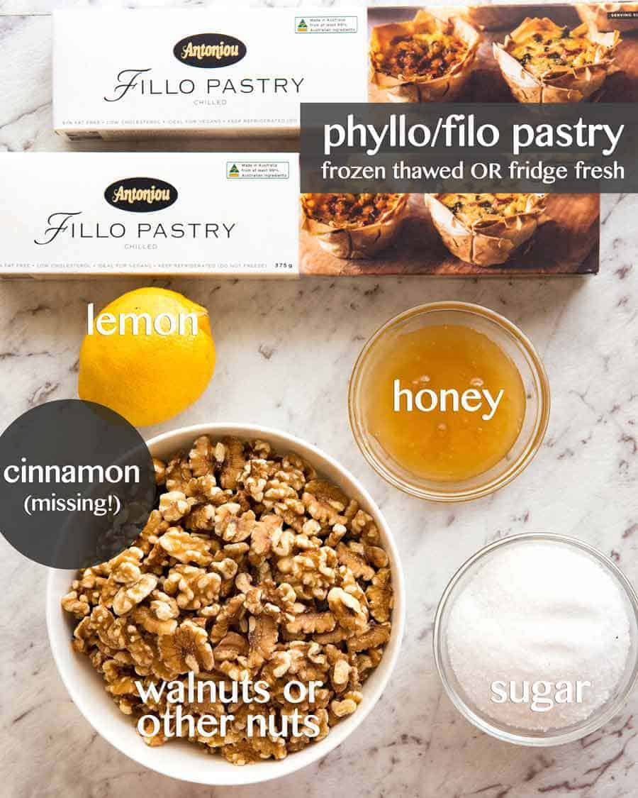

This honey baklava is flaky, crisp and tender and I love that it isn’t overly sweet.Baklava pieces loaded with nuts and honey lemon syrup with chocolate garnish it’s basically a party in your mouth.
I am a huge fan of baklava and this is the BEST baklava recipe I have ever tried. Hands down.
You will love the hint of mellow lemony flavor which offsets the sweetness and compliments the cinnamon. It’s truly delicious.

Ingredients
Sugar
Walnuts
Butter
honey
cinnamon
phyllo/filo sheets
Steps to make Baklava
Thaw phyllo dough according to package instructions (this is best done overnight in the fridge, then place it on the counter for 1 hour before starting your recipe to bring it to room temp).
Trim phyllo dough to fit your baking sheet. My phyllo dough package had 2 rolls with a total of 40 sheets that measured 9×14 so I had to trim them slightly. You can trim one stack at a time then cover with a damp towel to keep from drying out.
Butter the bottom and sides of a 13×9 non-stick baking pan.
How to Prepare Fillo (phyllo) Dough for Baklava Recipe:
Start with your honey sauce (which will need time to cool as your baklava bakes).
In a medium saucepan, combine 1 cup sugar, 1/2 cup honey, 2 Tbsp lemon juice, and 3/4 cup water.
Bring to a boil over med/high heat, stirring until sugar is dissolved, then reduce heat to med/low and boil an additional 4 minutes without stirring. Remove from heat and let syrup cool while preparing baklava
How to Assemble Baklava:
Pulse walnuts about 10 times in a food processor until coarsely ground/ finely chopped. In a medium bowl, stir together: 4 cups finely chopped walnuts and 1 tsp cinnamon
Place 10 phyllo sheets into baking pan one at a time, brushing each sheet with butter once it’s in the pan before adding the next (i.e. place phyllo sheet into pan, brush the top with butter, place next phyllo sheet in pan, butter the top, and so on...)
Keep remaining phyllo covered with a damp towel at all times. Spread about 1/5 of nut mixture (about 3/4 cup) over phyllo dough.
Add 5 buttered sheets of phyllo, then another layer of nuts. Repeat x 4. Finish off with 10 layers of buttered phyllo sheets. Brush the very top with butter.
Cut pastry into 1 1/2″ wide strips, then cut diagonally to form diamond shapes. Bake at 325˚F for 1 hour and 15 min or until tops are golden brown
Remove from oven and immediately spoon the cooled syrup evenly over the hot baklava (you’ll hear it sizzle). This will ensure that it stays crisp rather than soggy. Let baklava cool completely, uncovered and at room temperature
Tip 1
Can be made several days in advance of your shindig and keeps beautifully at room temperature for at least a week.
Tip 2
For best results, let baklava sit 4-6 hours or overnight at room temperature for the syrup to penetrate and soften the layers. Garnish baklava with finely chopped nuts or drizzle with melted chocolate. Store at room temp, covered with a tea towel for 1 to 2 weeks.